-
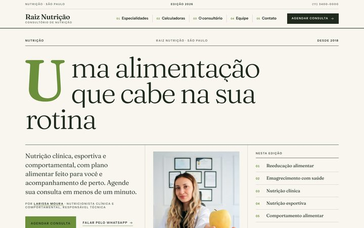
Modelo 01 Revista
Visual de revista impressa: título enorme com capitular, seções numeradas como um sumário, textos em colunas e perfis no formato de entrevista.
-
Modelo 02 Bento
Tudo organizado em blocos de tamanhos variados, como um painel: próximo horário livre, números, equipe e serviços à vista em uma única olhada.
-
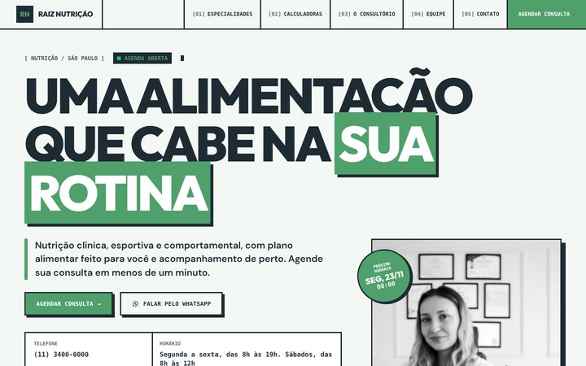
Modelo 03 Brutal
Brutalismo contemporâneo: bordas grossas, letras pesadas, blocos de cor chapada, sombras duras e uma faixa de texto em movimento. Impossível passar despercebido.
-
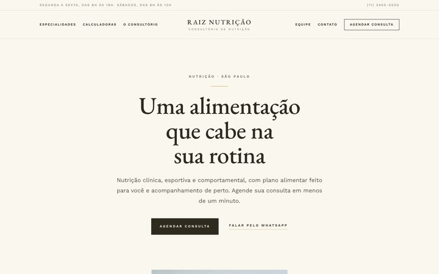
Modelo 04 Luxo
Luxo minimalista: muito respiro, serifa fina, letras espaçadas e fios dourados delicados. Fotos grandes em proporção alta e transições lentas, como uma maison.
-
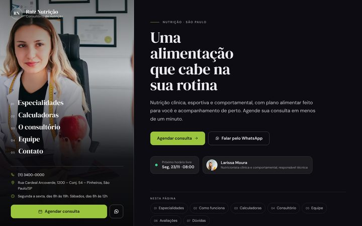
Modelo 05 Divisão
Tela dividida: metade fixa com foto, contato e botão de agendar sempre à vista, enquanto o conteúdo rola ao lado. No celular, tudo se empilha com elegância.
-
Modelo 06 Trilha
Uma linha do tempo que se desenha conforme o visitante rola a página, levando-o por marcos numerados até o agendamento.
-
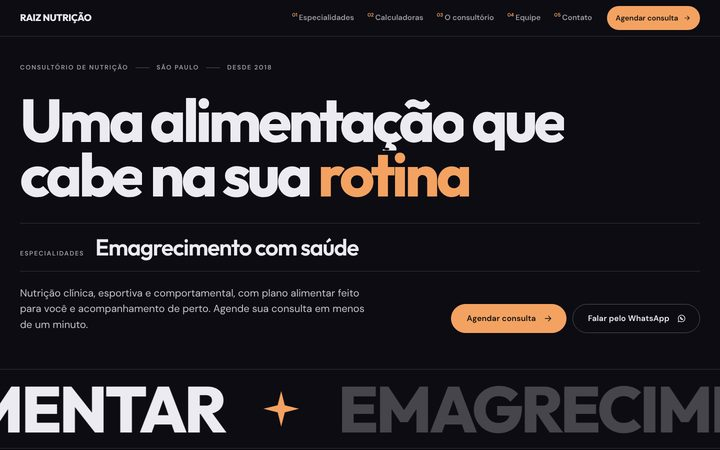
Modelo 07 Tipo
Tipografia gigante e em movimento: o nome dos serviços gira no topo, faixas de texto deslizam e os números ganham a tela.
-
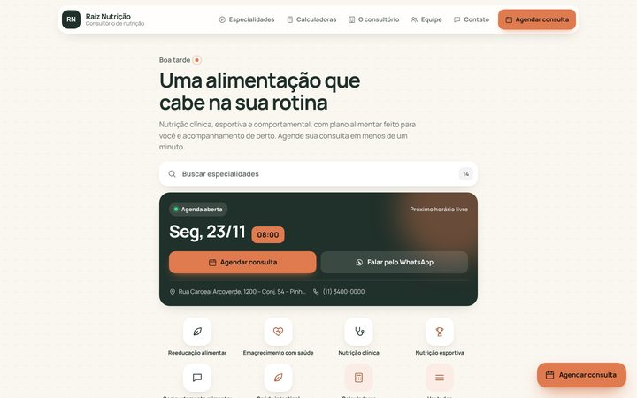
Modelo 08 App
O site com cara de aplicativo: tela inicial com saudação, próximo horário, atalhos em ícones e barra de navegação no polegar.
-
Modelo 09 Colagem
Fotos recortadas com fita adesiva, adesivos, rabiscos que se desenham e títulos com marca-texto: divertido sem perder a classe.
-
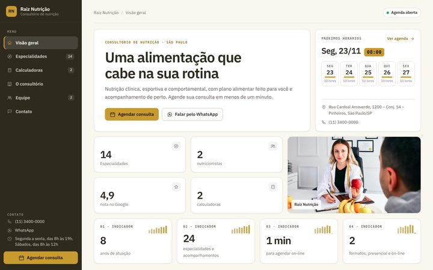
Modelo 10 Painel
Visual de software: menu lateral fixo, cartões com números em destaque e informações organizadas como um painel de controle.
-
Modelo 11 Camadas
Painéis em tela cheia que se sobrepõem ao rolar, como capítulos de um filme: foto com zoom lento, textos grandes e um índice lateral de seções.
-
Modelo 12 Horizonte
Topo panorâmico e serviços que deslizam na horizontal enquanto a página rola: um site amplo, leve e com movimento.
-
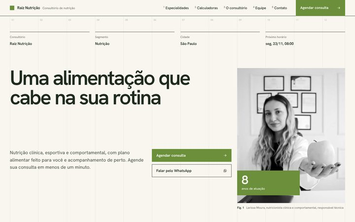
Modelo 13 Suíço
Estilo tipográfico internacional: grade de 12 colunas, números grandes de seção, linhas finas e a sua cor em blocos chapados. Organizado e atemporal.
-
Modelo 14 Orgânico
Formas suaves e acolhedoras: fotos em formato de seixo, manchas de cor que se movem devagar e ondas entre as seções. Ideal para saúde e bem-estar.
-
Modelo 15 Noir
Visual escuro de galeria (inspirado na Artero): brilho na cor de destaque, título palavra por palavra, foto em arco e cartões 3D.
-
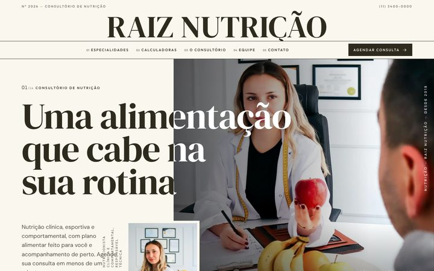
Modelo 16 Fashion
Editorial de moda: fotos enormes que sangram a tela, títulos gigantes sobre as imagens e serviços numerados como looks de desfile.
-
Modelo 17 Cartas
Cada serviço é uma carta grande que se empilha sobre a anterior ao rolar, com um leque de cartas no topo e movimento fluido em toda a página.
-
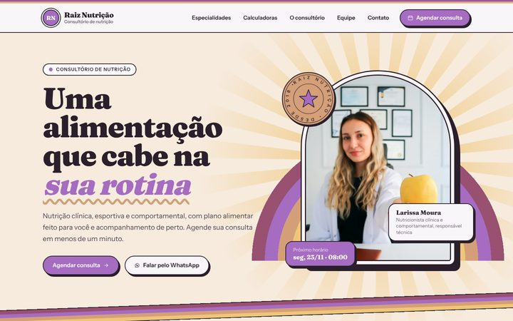
Modelo 18 Retrô
Anos 70 com cara de hoje: raios de sol, arcos coloridos, faixas listradas e títulos arredondados que deixam o site alegre e marcante.
-
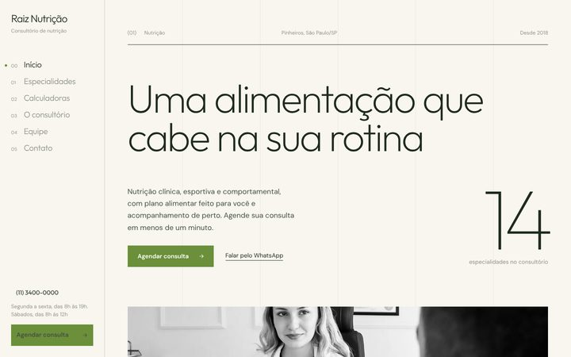
Modelo 19 Mono
Preto, branco e cinzas com uma única cor de destaque: tipografia fina e grande, números gigantes e fotos em preto e branco que ganham cor.
-
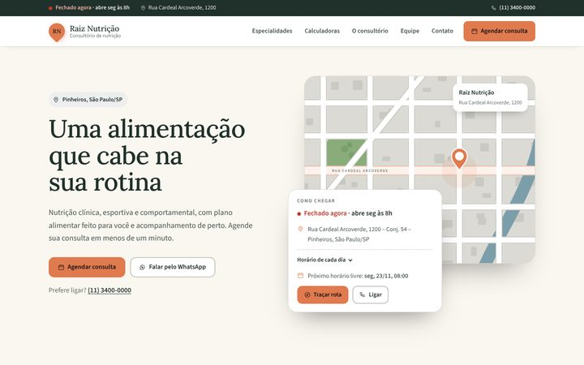
Modelo 20 Bairro
Próximo de quem mora perto: mapa ilustrado com o endereço, horário de funcionamento com aviso de aberto agora e contato sempre à mão.
-
Modelo 21 Clínico
Claro, arejado e acessível: letras grandes, botão de alto contraste, selos de confiança e a agenda sempre à vista.
-
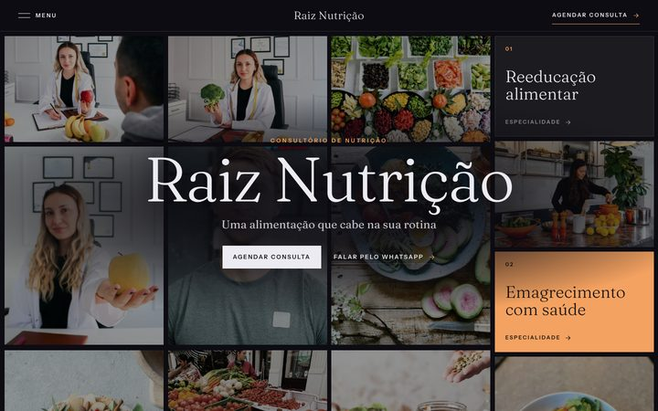
Modelo 22 Galeria
O portfólio vem primeiro: um mosaico de fotos com o seu nome por cima, imagens que ampliam ao toque e textos curtos e elegantes.
-
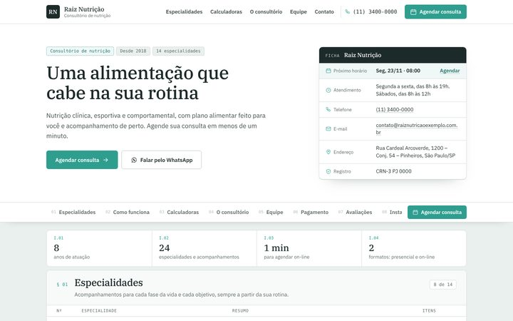
Modelo 23 Índice
Tudo em uma página, organizado em painéis: uma barra de abas fixa mostra onde o visitante está e leva direto a cada assunto.
-
Modelo 24 Conversa
Amigável e moderno: o topo é uma conversa que pergunta como pode ajudar, as dúvidas viram mensagens e tudo leva ao WhatsApp.
-
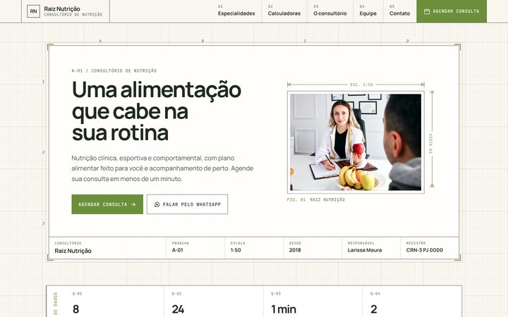
Modelo 25 Projeto
Visual de prancha técnica: grade de planta ao fundo, cotas que se desenham na tela, fotos emolduradas e carimbo com os dados da empresa.
-
Modelo 26 Aurora
Visual de produto digital: fundo escuro com aurora em movimento, cartões de vidro que reagem ao mouse e números que contam.
-
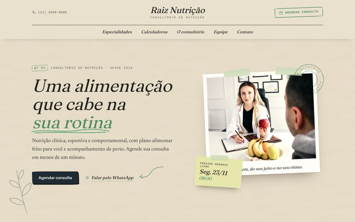
Modelo 27 Papel
Papel e tinta: títulos em serifa itálica, ilustrações de traço que se desenham, carimbos e notas adesivas. Artesanal e acolhedor.
-
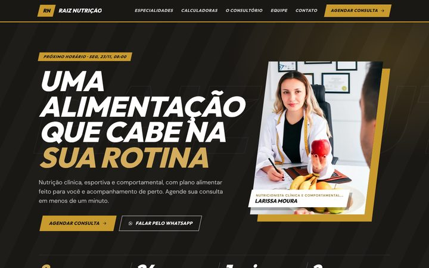
Modelo 28 Energia
Esportivo e cheio de movimento: cortes diagonais, tipografia pesada em itálico, faixas inclinadas rolando e números grandes de desempenho.
-
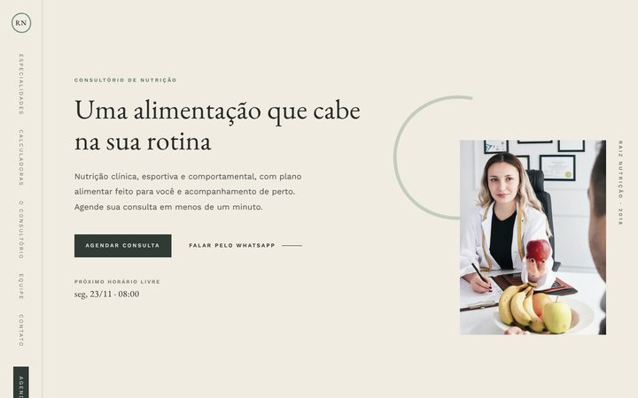
Modelo 29 Zen
Inspiração japonesa: assimetria calma, muito espaço, tons terrosos, pinceladas e títulos verticais. Sereno e preciso.
-
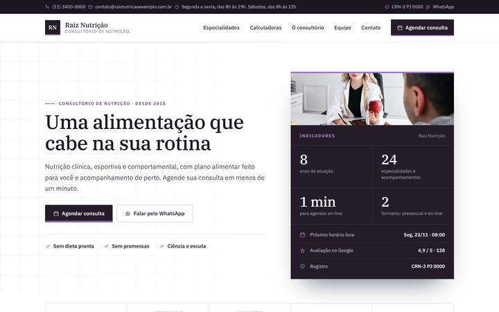
Modelo 30 Executivo
Corporativo premium: faixa de contatos, painel de indicadores no topo, tabela de serviços, selos de registro e chamada para reunião.